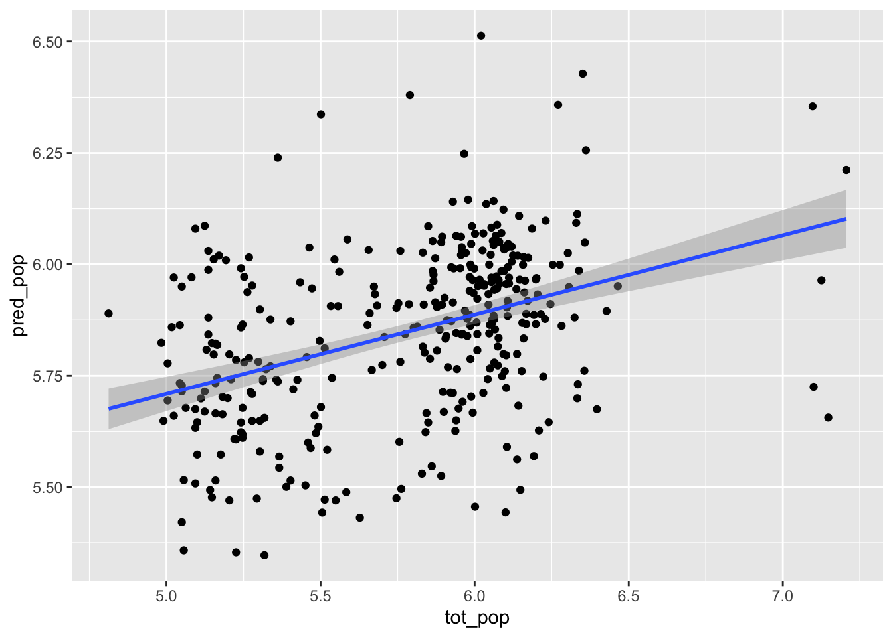
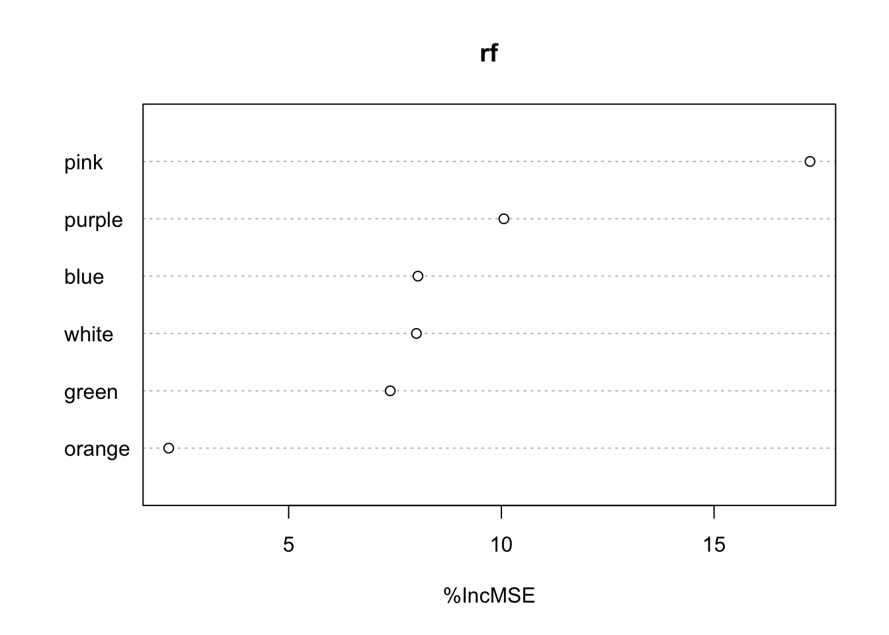
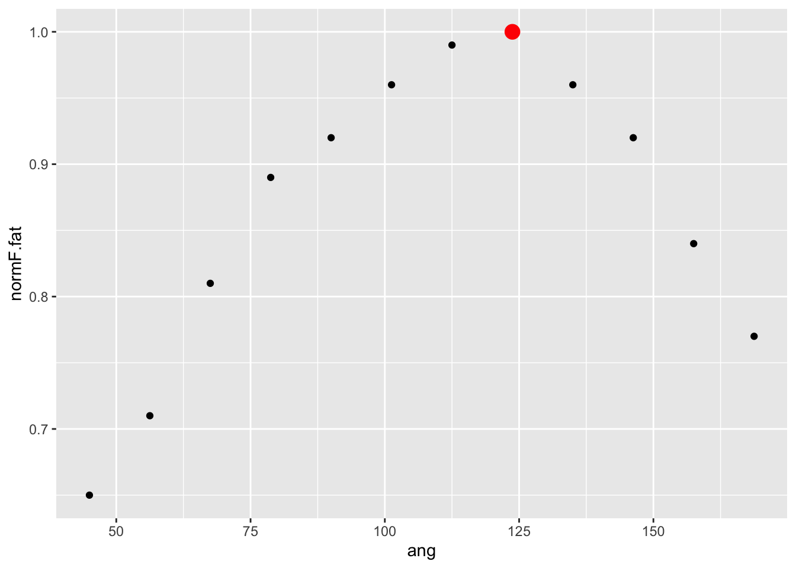

Module 7 Project
Introduction
Any student steeped in the mechanics of muscle understands that force produced by this tissue is governed by two important parameters: speed and length. In this project, we’ll explore the effect of length on muscle force generation and evaluate how fatigue affects this force-length (FL) relationship.
The FL relationship is governed by several important biophysical aspects of muscle architecture. At the fiber level, the force produced is largely mediated by the number of crossbridges that can be formed. Crossbridges are small and have a limited attachment range. Therefore, crossbridge attachments only occur in the actin-myosin overlap zone of a sarcomere. Together, with the assumptions underlying the crossbridge theory, this limitation implies that the maximal isometric force of a sarcomere is directly related to the amount of actin-myosin overlap (Fig. 1).

Fig. 1. The force-length relationship of a sarcomere as predicted by cross-bridge theory.
Of course, many muscles transect a lever system composed of a few bones articulating at a joint. For our subject, the human upper limb, the forearm flexors originate on the pectoral girdle above the humerus and insert on the radius and ulna, spanning the elbow joint. Simply put, the arm is a 3rd order lever (Fig 2). If we are to consider the force transmitted to the hand (or any other part along the antebrachium), we must also consider this lever configuration. As a lever, this system has a mechanical advantage that predicts the amount of output force transmitted by the input force. Mechanical advantage is defined by the following:
\[MA=\frac{L_i}{L_o}\],
where \(L_i\) is the in-lever and \(L_o\) the output leaver. For the human upper limb, the inlever is the distance between the flexor insertion and elbow joint and the out-lever is the length of the antebrachium and hand (or the distance between the elbow and the load). This ratio generally accords to 0.2 in this system. What this predicts is that any force applied to the in-lever results in 20% of that force at the end of the out-lever (i.e., the palm).
What makes this more complicated is that the effective in-lever, the input moment arm, changes as the forearm flexes. This is due to the fact that the insertion angle changes as the forearm rotates (Fig. 3). Because the force produced by an input is variable with respect to insertion angle, the output isn’t necessarily predicted by MA alone.

Fortunately for us, physiologists have found that studying the force (or torque) produced by a biomechanical system can still be useful in uncovering the FL relationships of the input muscles (Rassier, MacIntosh, and Herzog 1999). For this project, we take this assumption to mean that the force we measure at the hand as the muscle produces isometric force at various lengths is a reasonable reflection of the FL relationship governing force at the fiber level.

Fig. 4. Rotation of the forearm through its typical range of motion. Notice that the insertion angle of the biceps changes. (This was of course produced with R . . . have a look at this gist on github if you’d like the code.)
Keeping all this mind mind, we’ll study the FL relationship of the human upper limb and how this relationship responds to fatigue. Eccentric fatigue, whereby the muscle has been asked to do a lot of negative work (producing tension while lengthening) has been a particular interested to muscle physiologists (Yeung and Yeung 2008). That is, this research has shown that the force/torque-length/angle relationship shifts soon after and long after eccentric fatigue. Specifically, the peak normalized isometric force shifts over the typical range of angles for a biomechanical system.
The specific goals of this project are to:
- Produce isometric force-angle curves for the human forearm flexors undertaking maximum voluntary contractions (MVCs).
- Compare the angle at which maximum isometric force (\(F_{max}\)) occurs (\(\theta_{max}\)) between non-fatigued (i.e., control) and eccentrically fatigued forearm flexors.
- Discuss the underlying mechanisms resulting in a shift of \(\theta_{max}\) after eccentric fatigue.
Methods
Experimental Design
To assess the affect of eccentric fatigue of elbow flexor muscles, we’ll be measuring the isometric force over the range of motion of the forearm produced by MVC. To capture MVC data, you must design and construct a portable Arduino-based force-data acquisition system (DAQ). Your device should record force data over the course of 30s.
DAQ Design Components
- 100-kg S-type Load Cell with HX711 amplifier
- Arduino Uno microcontroller
DAQ Assembly and Programming
Assembly for this force logger is almost entirely captured in this tutorial. And, Prof. K has wired the load cell to the amplifier, so y’all just need to wire up the ampflifier to the Arduino
You’ll see that the sketch in the tutorial requires a
calibration step to output appropriate force or mass units.
Don’t worry about calibration. We’ll be looking at
normalized force, so units don’t matter.
For each experiment, you’ll be recording 12 bouts of MVC force, each corresponding to a different elbow angle, for 30 s. For each arm angle, one only needs to unplug the Arduino and hit the red restart button on the Arduino to begin taking force data. So as not to confuse from where your data came, it’s a good idea to change the name of the text file being saved to for each experiment, e.g., “Team_subject1_control.csv” and “Team_subject1_fatigue.csv”.
Data Collection
Elbow Angle
You’ll first need to construct a ganiometer, a simple device that measures the angle between the upper and lower arm (i.e., the elbow angle). One approach is to use the outline of a small plate to cut a disc out of cardboard and then bisect the diameter and then continue to bisect this semicircle into equal segments (Fig. 4.)

Fig. 4 A simple ganiometer made of cardboard.
To use the ganiometer, find the center of the elbow joint in lateral view and mark this position with a marker. From this point, mark a line along the lateral margin of the radius. (Fig. 5). Then, poke a hole through the center of the ganiometer and affix it to the upper arm so its center aligns with your mark at the elbow joint and the 0-180\(^o\) axis aligns with the long axis of the humerus (Fig. 6).You can affix the ganiometer to the upper arm by passing a strip of surgical tape through two tabs cut out on either side of the 0-180\(^o\) axis (Fig. 6).

Fig. 4 The elbow joint on a tiny human and the lateral margin of the radius marked with a dark line. Thanks, Zo!

Fig. 5 The ganiometer affixed to the upper arm with surgical tape with its center placed over the elbow joint. Note how the marked line on the radius indicates an elbow angle of about 90\(^o\).
As the elbow flexes or extends, you should be able to peak at the ganiometer to assess elbow angle.
Isometric MVCs
We will collect isometric force data from MVCs over 12 arm angles, 45-157.5\(^o\) at 11.25\(^o\) (call it 11\(^o\)) intervals. Your load-cell is affixed to a wooden or plastic dowel with a zip tie at one end and has a looped zip tie attached to the other. Pass the looped zip tie around the provided C-clamp and fasten the clamp to something that won’t move under the torque of your forearm. This could be table, desk, ect. Hold the dowel in your hand as shown in Fig. 6. Make sure your elbow is supported by something rigid (i.e. the top of a chair back, etc.).
Fig. 6 How to grip the the load-cell.
First collect your control (i.e., non-fatigued) data by starting at the largest arm angle, 157.5\(^o\). You can move through the 12 arm angles by rotating your body about your hips. That is, at the high elbow angles, you’ll be more upright, at lower angles, more bent over. At each angle, flex your elbow as hard as you can to produce a MVC, resetting your DAQ system each time. Make sure the load-cell forms a right angle with reference to your hand (Fig. 6). You might want to practice a few times to get a sense of how this will proceed.
MVCs after Eccentric Fatigue
To eccentrically fatigue your forearm flexors, you’ll perform isokinetic controlled drops of a heavy object weighing 1/3 your maximum isometric force recorded in the control experiments. A book bag or back pack full of heavy items (ahhh. . . books) should do just fine.
To perform your isokinetic eccentric drops, grab the book bag with the hand not involved in the experiment and pass it to the other as its forearm is fully flexed. With the bag now in your study hand, lower the bag slowly and at a constant speed. When the arm is fully extended, grab the book bag with the free hand and then flex the study forearm. Repeat by passing the bag to your study hand. Continue repeating this exercise for 3 min. Keep the cycles uniformly frequent by monitoring the duration (probably 3-4 s each cycle). At the end of the 3 mins, your forearm flexors should feel tired.
After you fatigue your flexors, wait 2 min. Then repeat the experiment exactly as you did for the control data.
Once you complete your experiments, upload your 24 data files to this Google directory. Be sure to name your files according to the following convention: “team_subject_angle_control/fatigue.csv”. Please stick to all lower case.
Software and Coding the Arduino
The sketch needed for this experiment could be quite simple. It does, however, require you to download the HX711 library.
As a primer, this would work:
#include "HX711.h" // include the appropriate library for `scale` functions
HX711 scale; //invoke scale functions
void setup() {
Serial.begin(115200); //set baud rate
scale.begin(6, 7); //set digital pins 6 and 7 as the data and clock pins
scale.tare(); //zero the measurements
}
void loop() {
float newReading= scale.get_units(10); //establish new variable from load cel
Serial.println(newReading); //print load cell value
}
NOTE:* You may find it handy to work with a previous release of Arduino IDE because the current version does not allow copying data from the serial monitory
Summary of Experimental Protocol
- Fabricate and program a load-cell data acquisition system.
- Make a ganiometer.
- Record isometric MVCs at 12 distinct elbow angles.
- Eccentrically fatigue your flexors.
- Wait 2 minutes.
- Repeat recording isometric MVCs at the same 12 distinct elbow angles.
- Upload data to this directory.
Pleas upload your data by Monday, November 13th.
Data Analysis
For each experiment, we’ll stick to a convention within the muscle physiology world by considering maximum normalized force. That is:
- Find maximum force for each recording (don’t worry about the specific values or units because you’ll. . .).
- Find maximum force (\(F_{max}\)) across all angles for each experiment (control or fatigued) for each individual and then divide all maximum values for that experiment by \(F_{max}\). Your values will now be normalize, i.e., scaled 0-1 with a value of 1 representing the highest force recorded during an experiment.
Using the normalized force data from the control and fatigued experiments, we’ll consider shifts at which angle \(F_{max}\) occurred, the difference in \(\theta_{max}\). To assess any shift in \(\theta_{max}\) with our limited elbow angle samples, we could simply look at the angle at which the flexors produce the most force. For instance, for the these data:
library(ggplot2)
ang <- seq(45,168.75,length.out = 12) #elbow angle
normF <- c(0.71, 0.77, 0.83, 0.91, 0.97, 1.00, 0.96, 0.94, 0.89, 0.84, 0.77, 0.74) #you'll get this by reading in data and calculating normalized values
qplot(ang,normF)+geom_point(aes(x=ang[which.max(normF)],y=normF[which.max(normF)]),col="red",size=4)## Warning: `qplot()` was deprecated in ggplot2 3.4.0.
## This warning is displayed once every 8
## hours.
## Call `lifecycle::last_lifecycle_warnings()`
## to see where this warning was generated.
ang[which.max(normF)] #Find angle for Fmax, theta_max## [1] 101.25So, of the 12 angles that we sampled (45–157.5\(^o\)), the maximum isometric force occurred at angle (\(\theta_{max}\)=) 101.25\(^o\). Simply doing this overlooks the fact that the maximum force could have occurred between any two of the sampled angles. Given the trend in the figure above, \(\theta_{max}\) could have been an angle either greater and less than 101.25\(^o\). To estimate the trend and find a perhaps more refined estimation of \(F_{max}\) we’ll resort to (wait for it) . . . modeling. In this case, a series of polynomial models should work. Polynomial models are great for fitting parabolic data like those we have here, but are tricky in that one can keep adding monomial terms very quickly to achieve a better fit. This requires the practitioner to make sure that they are not overfitting the model. Fortunately, we have the tools to prevent such a thing using AIC, as we have learned.
Therefore, let’s fit some polynomial models to our example data with
a different number of monomial terms (i.e., orders) and tease apart the
fit and penalty for including more terms using AICc. Fortunately, we can
use the lm() and poly() functions from the
base package to fit the models and use AICc() from the
MuMIn package for AICc fitting.
library(MuMIn)
poly.m2 <- lm(normF~poly(ang,2)) #second order
poly.m3 <- lm(normF~poly(ang,3)) #third order
poly.m4 <- lm(normF~poly(ang,4)) #fourth order
AICc(poly.m2,poly.m3,poly.m4) #the second order model fits best## df AICc
## poly.m2 4 -43.90316
## poly.m3 5 -39.60496
## poly.m4 6 -49.47748x.pred <- seq(45,157.5,length.out = 1000) #define 1000 angles from our range
normF.pred <- predict(poly.m4,newdata = data.frame(ang=x.pred)) #predict the force using 1000 angles
qplot(ang,normF)+geom_point(aes(x=x.pred,y=normF.pred),col="red")+geom_point(aes(x=x.pred[which.max(normF.pred)],y=normF.pred[which.max(normF.pred)]),size=5,col="blue")
x.pred[which.max(normF.pred)] #theta_max## [1] 104.9099In this example we constructed 3 polynomial models of the 2nd, 3rd,
4th variety and then used AICc to find the lowest AICc score. The 4th
order model fits best, so we then produced 1000 discrete values within
our range with seq() to pass topredict() to
predict force over this range using our best fitting model (producing
normF.pred). We then found the max of
normF.pred (the \(F_{max}\)) and plotted that, along with our
predictions. Lastly, we found \(\theta_{max}\), a value of 104.9.
A goal of this project is to detect shifts in \(F_{max}\) with respect to angle. If we had two data sets, one control and one produced after fatigue, we merely need to compare the two \(\theta_{max}\), that is, the shift in angle for \(F_{max}\) predicted by two polynomial models. This would look something like this:
normF.fat <- c(0.65, 0.71, 0.81, 0.89,0.92, 0.96, 0.99, 1, 0.96, 0.92, 0.84, 0.77) #fatigue data, you'll get this by reading in data and calculating normalized values
qplot(ang,normF.fat)+geom_point(aes(x=ang[which.max(normF.fat)],y=normF.fat[which.max(normF.fat)]),col="red",size=4)
ang[which.max(normF.fat)] #Find angle for Fmax for fatigue data## [1] 123.75poly.m2.fat <- lm(normF.fat~poly(ang,2)) #second order
poly.m3.fat <- lm(normF.fat~poly(ang,3)) #third order
poly.m4.fat <- lm(normF.fat~poly(ang,4)) #fourth order
AICc(poly.m2.fat,poly.m3.fat,poly.m4.fat) #the second order model fits best## df AICc
## poly.m2.fat 4 -54.91075
## poly.m3.fat 5 -55.05750
## poly.m4.fat 6 -49.10034normF.pred.fat <- predict(poly.m2.fat,newdata = data.frame(ang=x.pred)) #predict the force using 1000 angles
qplot(ang,normF)+geom_point(aes(x=x.pred,y=normF.pred.fat),col="red")+geom_point(aes(x=x.pred[which.max(normF.pred.fat)],y=normF.pred.fat[which.max(normF.pred.fat)]),size=5,col="blue")
x.pred[which.max(normF.pred.fat)]-x.pred[which.max(normF.pred)] #shift in angle for Fmax, theta_max## [1] 10.24775Looks as if there’s a 10.3\(^o\) shift in \(\theta_{max}\).
Say we had a bunch of data (from only 10 subjects) and you wanted to compare the control against fatigued data graphically, you could do the following. First we’ll simulate some control and fatigue data, adding random noise drawn form a normal distribution and plot the data with a color according to experiment to quickly assess the pattern.
library(tidyverse)
set.seed(1234) #to keep random noise the same
sub <- 1:10 #ten subjects
dat.l <- list() #empty list
#loop to run through subjects and simulate data based on noise added to data above
for(i in sub){
noise <- rnorm(length(ang),mean = 0.02,sd = 0.01)
noise2 <- rnorm(length(ang),mean = 0.02,sd = 0.01)
dat.l[[i]] <- tibble(
rbind(
data.frame(ang,force=normF+noise,subject=i,exp="control"),
data.frame(ang,force=normF.fat+noise2,subject=i,exp="fatigue")
)
)%>%
group_by(subject,exp)%>%
mutate(force=force/max(force))
}
dat <- do.call(rbind,dat.l) #get data into one tibble
dat%>%
ggplot(aes(ang,force,col=exp))+geom_point()
Now let’s take our data and get AICc scores for our three polynomial
models. We’ll group the data by subject and experiment and retrieve AICc
from each model (m2, m3, and m4).
Then, we’ll pivot the tibble to a longer format so that we have a single
column for AICc values.
AICs <- dat%>%
group_by(subject,exp)%>%
summarize(
m2=AICc(lm(force~poly(ang,2))), #second order
m3=AICc(lm(force~poly(ang,3))), #third order
m4=AICc(lm(force~poly(ang,4))) #fourth order
)%>%
pivot_longer(m2:m4,names_to="model",values_to="AICc")%>%
print()## # A tibble: 60 × 4
## # Groups: subject [10]
## subject exp model AICc
## <int> <chr> <chr> <dbl>
## 1 1 control m2 -43.2
## 2 1 control m3 -39.3
## 3 1 control m4 -42.5
## 4 1 fatigue m2 -49.3
## 5 1 fatigue m3 -46.0
## 6 1 fatigue m4 -37.7
## 7 2 control m2 -43.8
## 8 2 control m3 -39.4
## 9 2 control m4 -55.2
## 10 2 fatigue m2 -57.6
## # ℹ 50 more rowsNow we’ll do something very similar, predicting values for 1000
discrete angles across our range of elbow positions. Notice that we’ve
summarized the data by subject, experiment and model to find the angle
(x.pred) which matches the max force value.
fits <- dat%>%
group_by(subject,exp)%>%
summarize(
m2=predict(lm(force~poly(ang,2)),newdata=data.frame(ang=x.pred)), #second order
m3=predict(lm(force~poly(ang,3)),newdata=data.frame(ang=x.pred)), #third order
m4=predict(lm(force~poly(ang,4)),newdata=data.frame(ang=x.pred)) #fourth order
)%>%
pivot_longer(m2:m4,names_to="model")%>%
group_by(subject,exp,model)%>%
summarize(theta_max=x.pred[which.max(value)])%>%
print()## Warning: Returning more (or less) than 1 row per
## `summarise()` group was deprecated in dplyr
## 1.1.0.
## ℹ Please use `reframe()` instead.
## ℹ When switching from `summarise()` to
## `reframe()`, remember that `reframe()`
## always returns an ungrouped data frame and
## adjust accordingly.
## Call `lifecycle::last_lifecycle_warnings()`
## to see where this warning was generated.## # A tibble: 60 × 4
## # Groups: subject, exp [20]
## subject exp model theta_max
## <int> <chr> <chr> <dbl>
## 1 1 control m2 107.
## 2 1 control m3 103.
## 3 1 control m4 104.
## 4 1 fatigue m2 115.
## 5 1 fatigue m3 118.
## 6 1 fatigue m4 117.
## 7 2 control m2 107.
## 8 2 control m3 103.
## 9 2 control m4 105.
## 10 2 fatigue m2 115.
## # ℹ 50 more rowsNow let’s join these the AICs and fits
tables so that we can filter the model predictions by which model fits
best. Note filter(best==TRUE) after constructing a
best column according to the minimum AICc score using
mutate().
best.models <- fits%>%
left_join(AICs)%>%
group_by(subject,exp)%>%
mutate(best=AICc==min(AICc))%>%
filter(best==TRUE)%>%
dplyr::select(-best)%>%
print()## Joining with `by = join_by(subject, exp,
## model)`## # A tibble: 20 × 5
## # Groups: subject, exp [20]
## subject exp model theta_max AICc
## <int> <chr> <chr> <dbl> <dbl>
## 1 1 control m2 107. -43.2
## 2 1 fatigue m2 115. -49.3
## 3 2 control m4 105. -55.2
## 4 2 fatigue m2 115. -57.6
## 5 3 control m4 107. -47.7
## 6 3 fatigue m3 119. -57.2
## 7 4 control m4 104. -55.4
## 8 4 fatigue m3 120. -51.9
## 9 5 control m4 103. -48.9
## 10 5 fatigue m2 115. -51.3
## 11 6 control m4 103. -41.7
## 12 6 fatigue m3 120. -53.7
## 13 7 control m4 104. -48.0
## 14 7 fatigue m3 120. -55.9
## 15 8 control m2 107. -48.5
## 16 8 fatigue m3 116. -65.9
## 17 9 control m4 103. -48.3
## 18 9 fatigue m2 115. -52.3
## 19 10 control m4 105. -49.3
## 20 10 fatigue m2 115. -55.0To investigate whether a shift if \(\theta_{max}\) is different between the control and fatigue experiments, we can run the following ANOVA.
anova(lm(theta_max~exp,best.models))## Analysis of Variance Table
##
## Response: theta_max
## Df Sum Sq Mean Sq F value Pr(>F)
## exp 1 749.21 749.21 180.18 8.144e-11 ***
## Residuals 18 74.85 4.16
## ---
## Signif. codes: 0 '***' 0.001 '**' 0.01 '*' 0.05 '.' 0.1 ' ' 1Lastly, we should calculate the mean shift with SEM. To find the
shift, we can pivot the best.models tibble to a wider
format so we can have \(\theta_{max}\)
for each experiment in separate columns and find the difference with
mutate(). Then, summarise() can be used to
find the mean and SEM.
best.models%>%
pivot_wider(id_cols=subject,names_from = exp,values_from=theta_max)%>%
mutate(shift=fatigue-control)%>%
ungroup()%>%
summarise(mean.shift=mean(shift),se.shift=sd(shift)/sqrt(length(shift)))## # A tibble: 1 × 2
## mean.shift se.shift
## <dbl> <dbl>
## 1 12.2 0.960Project Report
Please submit your report to your team GitHub repository as an .Rmd document with HTML output that addresses the following questions:
- Do class-wide force-angle data for isometric MVC accord to a typical FL relationship both under control and fatigued conditions?
- Is there a significant shift between \(\theta_{max}\) between the control and fatigue FL relationships?
In answering these questions, be sure to use the visualization, modeling, and model-assessments tools we’ve used in the course so far.
The answers and narrative in your .Rmd should include the following components:
- A YAML header that specifies HTML output, the authors, and a bibliography named “BIOL3140.bib”. Submit this bibliography as well!
- Sections including an introduction, methods, results, discussion,
author contributions, and references. Make sure that each, aside from
the references, includes one to two short paragraphs. Specifically:
- Introduction: Frame the questions, indicating why they are important, what background work has been done in this realm, and how you will answer them. Please include at least one reference to support the summary of previous work. Note: this can be done easily by refiguring the introduction to this project report.
- Methods: Explicitly state how you answered the questions, including a narrative of all the analyses both qualitative and quantitative.
- Results: Include any appropriate figures or tables and a narrative of the main results that are important to answering the questions.
- Discussion: Succinctly declare how the results relate to the question and how they compare to previous work devoted to the topic. In addition, be sure to comment on the importance of your findings to the broader topic at hand. Please include at least one reference to another relevant study. Note: circling back to the introductions, both to this project description and yours, will be helpful here.
- Author contributions: Briefly outline what each team member contributed to the project.
Project reports should be uploaded by 11:59 PM on Thursday, November 16th.
Please have a look at out Phase II report rubric to get a sense of how this and other Phase II reports will be grade.